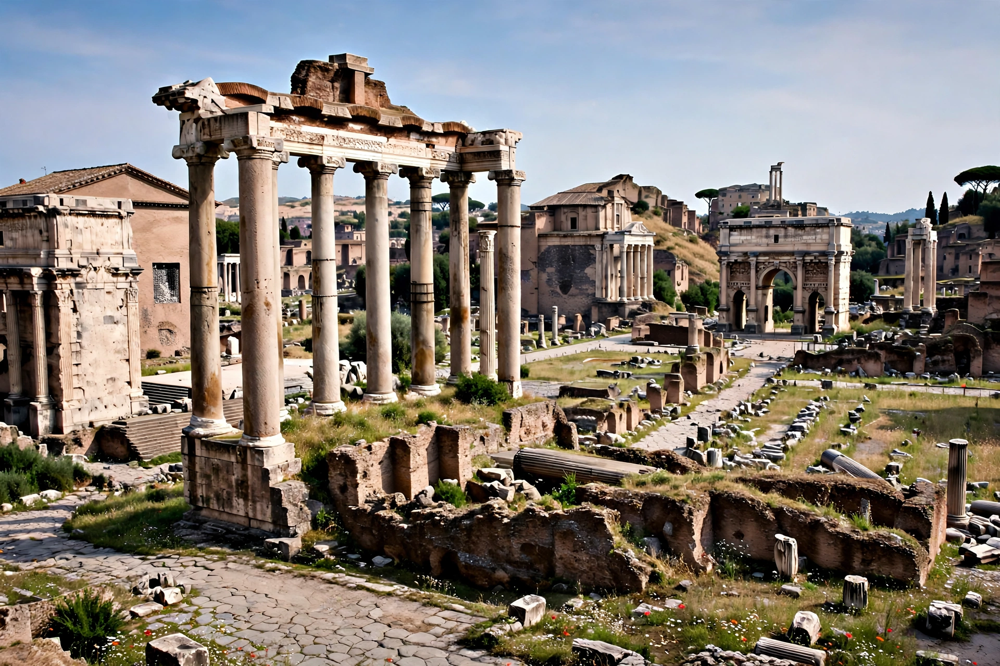

| Res publica | |
 | |
| Language | Latin |
|---|---|
| Literal meaning | "Public affair" / "public thing" |
| Derived terms | Republic, commonwealth |
Res publica (Latin: [reːs ˈpuːblɪka]) is a Latin phrase meaning "public affair" or "the public thing". It is the root of the modern word republic and is closely related to the concept of the commonwealth. In Roman usage it denoted the state and its affairs as the shared concern of the citizen body, as opposed to res privata, private matters.
For Romans, the res publica was not a regime type in the modern sense but the public order itself — the people (populus), the Senate, the laws and the common property and interests of the community. Cicero, in his dialogue De re publica, defined it as res populi, "the affair/property of the people", and described the ideal state as a balanced mixture of monarchy, aristocracy and democracy. Even under the emperors, the state continued to be styled the res publica, and the formula SPQR (Senatus Populusque Romanus) remained in use.
Renaissance humanists and early modern political thinkers revived the term; writers such as James Harrington used "commonwealth" as its English equivalent. The phrase survives in the names and mottos of modern republics and in the political-science concept of republicanism, with its stress on civic virtue, mixed government and the rule of law.